Story A · EN-02, 04, 09, 10, 20, 27–30, 34–38
Intake + sorter
Goal: pick up every Pollen and Nectar from the floor and send each one to its own shooter.
The problem
BIOBUZZ has two ball sizes: Pollen is 71 mm and Nectar is 91.44 mm. Our robot needs one intake that grabs both and then sorts them. We set one rule: the spinning roller must be the first thing every ball touches, so nothing pushes a ball away before the roller grabs it.
What we tried
- Three stacked rollers (Oct 13–14). Our first intake had three tubing rollers inside the robot. In CAD the rollers were 72.5 mm across but only 72 mm apart, so they rubbed. We moved them to 80 mm apart.
- Sort by size (Oct 18–20). We built a separate 5-inch bench rig with a curved ramp and a 78 mm tall slot in the back wall. Pollen fits through with 7 mm to spare. Nectar is 13 mm too big, so it has to go over the wall.
- The math found a weak spot. Pollen only flew into the slot in a narrow speed band (about 0.78–0.84 m/s). So we cut the ramp lower (at 45°) and started the slot right where the ramp ends.
- First bench test (Oct 21): Nectar got stuck on the lip at the top of the slot. We added a grippy strip to that lip.
- Second bench test (Oct 21): Pollen went into the slot 5 out of 5 times, in about half a second. Nectar got past the slot 6 out of 6 times. But with only roller 1 powered, Nectar went over the wall 0 out of 6 times: it parked at roller 2. Some tubing also pulled out of the caps within 2 minutes.
- Another idea we drew (Oct 20): a "wedge" that turns every ball sideways and a bar that only Pollen fits under. It is in CAD with test-kit files, but not tested.
What we chose
We kept the low-slot intake and put it on the drivetrain chassis. We made roller 1 run from wheel to wheel (345 mm wide, in three sections) and put the guides behind the roller, so the roller still touches first for any ball within about ±150 mm of the centre. The robot is 17.89 in long, under the 18 in limit.
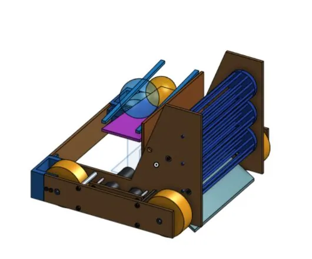
- Three rollers stacked inside the robot
- Rollers rubbed (72.5 mm rollers, 72 mm apart)
- Moved to 80 mm apart
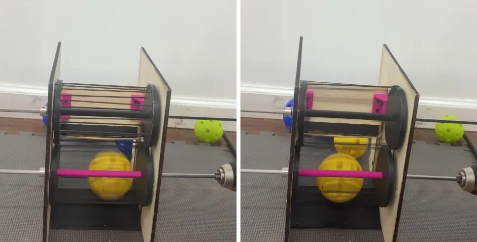
- Pollen into the slot 5/5
- Nectar past the slot 6/6
- Nectar over the wall 0/6: roller 2 needs power
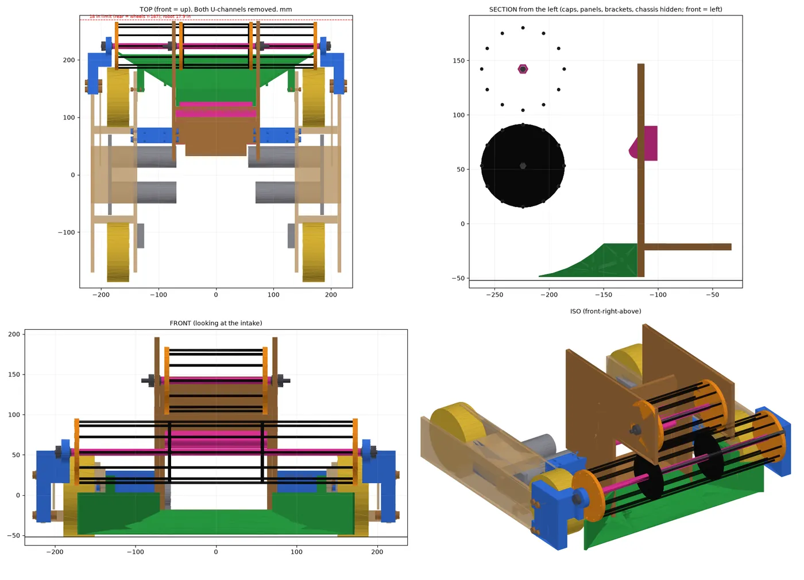
- Roller 1 wheel to wheel, 345 mm
- Roller first within about ±150 mm
- Robot 17.89 in long
Status: the bench kit is built and tested (numbers above). The wide intake on the chassis is CAD only: the print and laser files are made, but it isn't built yet. Next: power roller 2, keep the tubing from pulling out, and run a counted speed test with a side camera.
Lesson learned: a quick bench mock-up with real balls showed us a problem (Nectar stuck on the lip) that a cheap grip strip fixed in one afternoon.
Story B · EN-12, 15–18, 23, 26, 31, 33, 39
Pollen shooter
Goal: launch Pollen up and into the hive, the same way every shot.
The problem (Oct 4)
Our first pollen shooter barely shot. The ball came out at about 1–3 m/s and went up only about 0.5 m, or it got stuck under the wheel.
How we found the cause: frame by frame
We filmed two tests and went through them one frame every 0.1 s, and listened to the sound.
- One ball sat under the spinning wheel for 2 seconds and was never grabbed. We could still hear the motor, so the wheel was spinning. It just wasn't touching the ball.
- Other balls stalled at the wheel for 0.1–0.2 s. A good shot takes a few thousandths of a second.
- In the second test someone had to hold the hood down by hand. The hood was bending away from the ball.
- The ball also rested in a low pocket just before the wheel, where gravity held it away.
A flywheel shooter needs to squeeze the ball about 10–15%. Our ball is 71 mm, so the gap should be about 60–64 mm. Our gap was bigger than the ball. Cause: no squeeze and a pocket in front of the wheel.
Options and what we chose
We compared five fixes: (A) bolt the hood solid and set the gap, (B) reshape the hood so the ball rolls straight into the wheel, (C) a heavier flywheel, (D) a faster gear ratio, (E) side guides. C and D can't help if the wheel never touches the ball, and the video showed the ball was already centred. We chose A + B first. The new hood has a 63.5 mm gap (10.6% squeeze) and slots so we can change the exit angle with a screwdriver.
We also checked in CAD whether the shot could reach the hive. A ball thrown straight up can't score from anywhere. It needs about an 86° exit and 5.4–6.4 m/s.
Then we kept improving it
- Oct 8: there was an open gap of up to 27 mm between the floor and the hood at high angles. We made a "comb": floor fingers slide through slots in the hood, so there is no gap at any angle.
- Oct 9: the printed chain tensioner looked flimsy. Our math said its thin neck could break at about 35 N, and a hand-tightened bolt can pull 300 N. We made it one thick 13.6 mm piece.
- Oct 14–16: a servo now moves the hood. The tall one-piece hood failed while printing, so we split it into two halves with pegs.
- Oct 18–19: a new design: a fixed feed ramp plus one moving hood with gear teeth, turned by a servo. The motor connects through a right-angle gearbox, so there is no chain.
- Oct 23–26: we made it stronger. The two side walls and the motor bracket became one print, and the shooter sits on a plywood platform. After a bench test we needed lower shots, so the hood range moved from 35–70° to 20–55°.
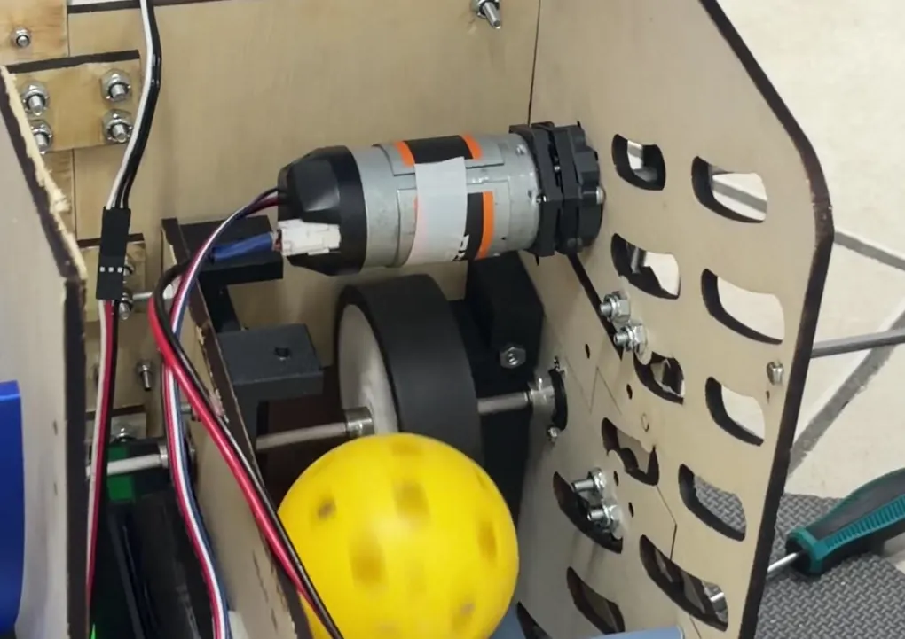
- Ball sat 2 s under the spinning wheel
- Gap bigger than the 71 mm ball
- Hood bent away
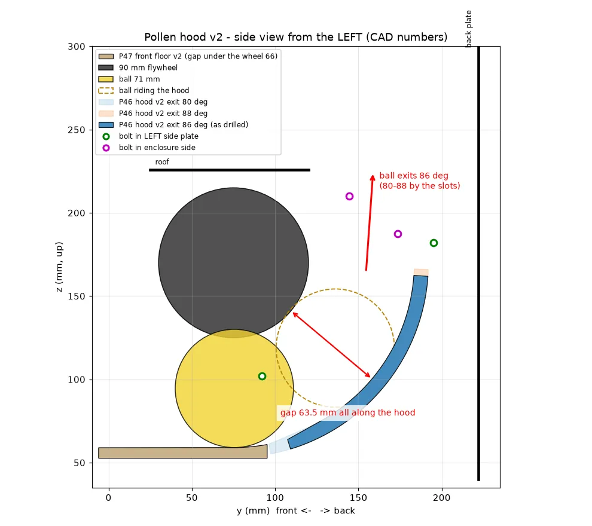
- Rigid hood, 63.5 mm gap
- 10.6% squeeze
- Exit angle adjustable in slots
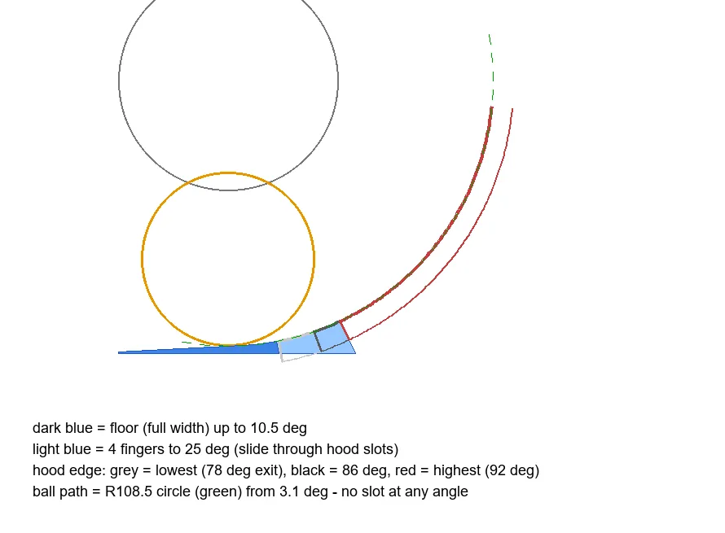
- Comb floor fingers through the hood
- No gap at any angle (was up to 27 mm)
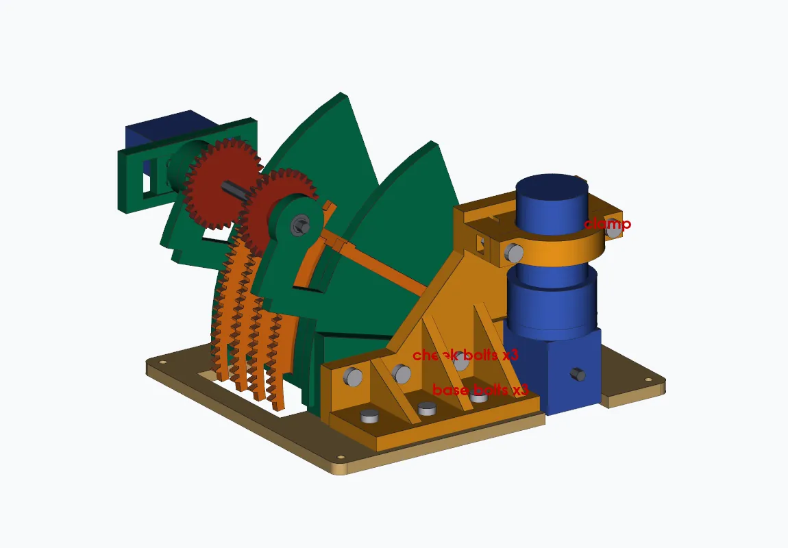
- Servo + gears move the hood, 20–55°
- Walls + motor bracket in one print
- Bench test: "worked great"
Status: the team built and bench-tested the v4 shooter on Oct 26. It "worked great" and was easy to put together. We haven't measured shot distance or height yet. The speed-control code is ready but not tested on the robot (Control).
Lesson learned: design a straight screwdriver path to every motor screw. Reaching the gearbox screws with an L-key between the walls was the hardest part of the build.
Story C · EN-14, 21, 24, 32, 41
Nectar shooter
Goal: launch the bigger Nectar ball (91.44 mm) high and far, with an angle we can change.
The problem
When we checked the nectar shooter in CAD, it had the same problem as the pollen one: the gap was 91.4 mm, the same as the ball, so 0% squeeze. There was also no way to tension its chain if we tried other sprocket sizes.
What we tried
- Oct 7–8: we copied the pollen hood v2 idea. Gap 81.5 mm (11% squeeze), exit angle adjustable from 78° to 92°, and a draw bolt to tension the chain. When we saw thin plastic around the slots, we moved the bolts so there is at least 6 mm of plastic at every slot edge (range now 80–90°).
- Oct 14: in CAD the nectar ramp was only 0.3 mm from the spinning pollen flywheel. We raised it 20 mm, which gives an 8.6 mm gap.
- Oct 15: when we put the shooter in the robot, the CAD showed its hood would stick out 7.65 mm past the back of the robot. We had to rethink where it goes.
- Oct 19: we decided on a 1 mm squeeze for Nectar and drew a new plan: hood inside radius 135.44 mm.
What we chose
The pollen v4 shooter worked on the bench, so we started the nectar shooter fresh from the same ideas (Oct 26): one-piece side walls with the motor bracket, a servo-driven geared hood (20–55°) with hard stops, and gear teeth twice as thick (8 mm instead of 4) for the heavier hood. We added a straight screwdriver hole to every gearbox screw, the lesson from the pollen build. The one-piece walls are 244 × 202 × 150 mm and fit our printer bed with 12 mm to spare.
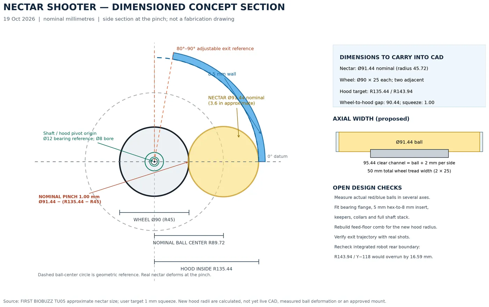
- 1 mm squeeze target
- Hood inside radius 135.44 mm
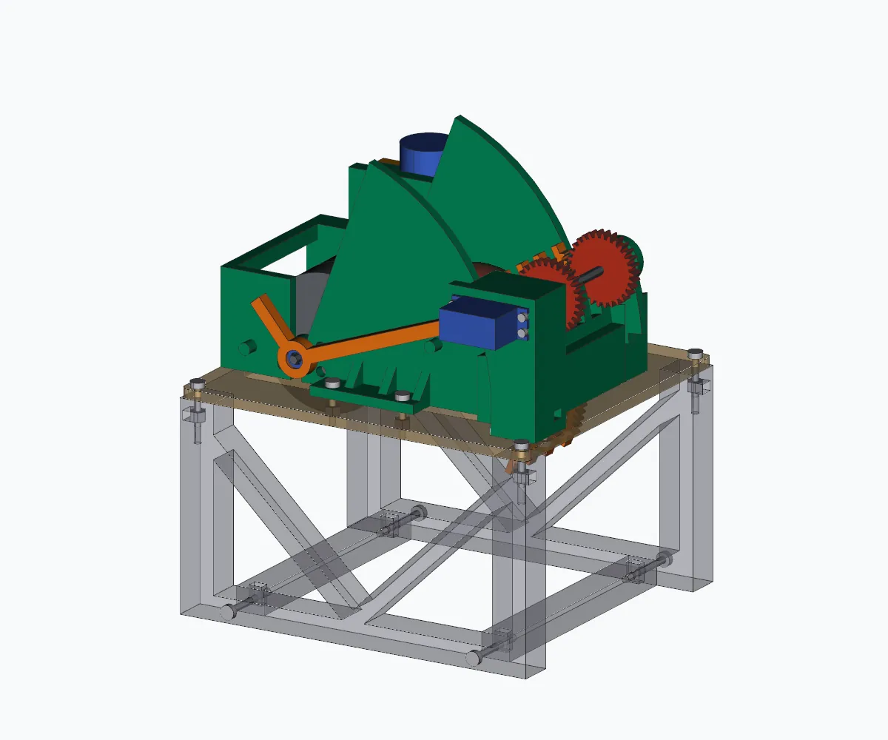
- One-piece walls + motor bracket
- Fits the 256 mm printer bed
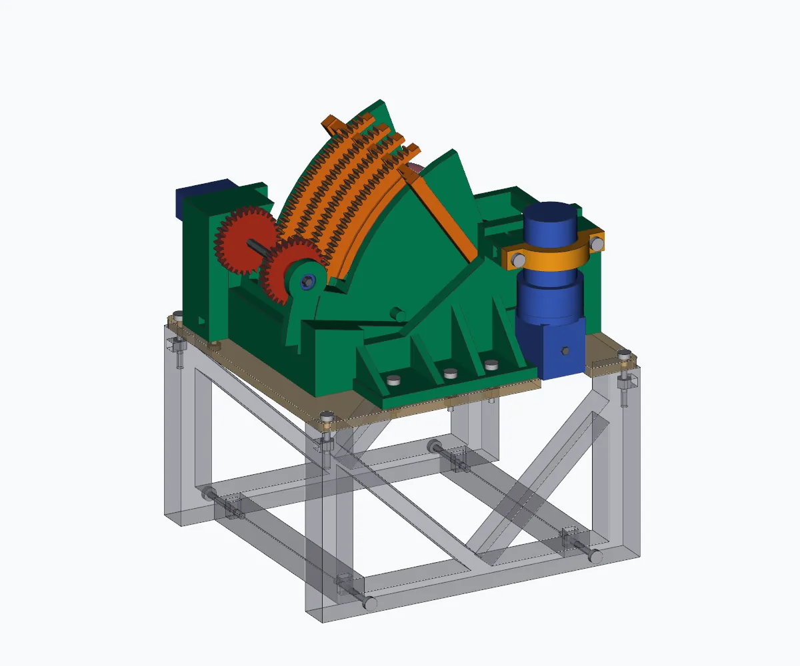
- 8 mm gear teeth, hard stops
- No clashes in CAD from 20° to 55°
Status: CAD only. The nectar shooter v1 is designed and its print files are made, but it isn't printed or tested yet. Next: print it, check the servo can move the bigger hood, and test shots at 20°, 30° and 40°.
Lesson learned: starting from a design that already works (pollen v4) and fixing its one hard part was faster than patching the old nectar design.
Story D · EN-06, 07, 22, 25, 40
Drivetrain
Goal: a strong, square chassis with chain-driven wheels that fits inside 18 inches.
The problem
Our first drive pods had three problems: the chain didn't seem the right length, the wheel axle was a few millimetres short, and some bolts hit the chain.
What we tried
- Chain math (Sep 28). Motor to wheel was 105.0 mm. With 10-tooth sprockets and 8 mm chain, that needs 36.25 links, and you can't buy a quarter link. We moved the motors 0.8 mm so 36 links fit.
- Axle. Our 80 mm axle was 4.55 mm short, so tightening it bent the wood inward. We flipped one bearing, and then the 80 mm axle fit.
- Bolts in the chain. Bolts 15 mm from the motor shaft sat inside the chain's path (16.5 mm). We moved them to 25 mm away.
- Test pod first (Oct 15). We designed printed ties for each pod and one front-right test pod. We checked goBILDA's own part files and found the sprocket is 10.8 mm long, not the 8 mm we guessed, so every spacer changed.
- Cross ties (Oct 17). The screws for the cross braces sat under the drive rails, so no screwdriver could reach them. We chose to take the wheels off for a few minutes and made 4 drill guides so the holes line up.
- Rear cross panel (Oct 24). Our U-channel is 264 mm long, but the gap is 274 mm, so it's 10 mm short. We designed a plywood panel with tabs that go through slots in new inner plates. The new plates have every hole cut by the laser, so no hand drilling.
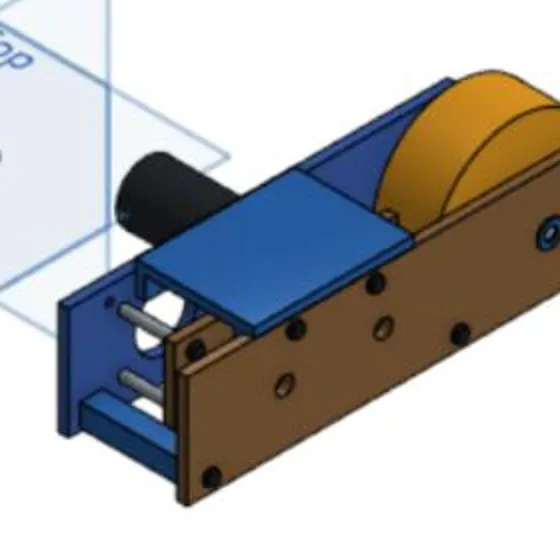
- One pod to test before the full chassis
- Spacers fixed for the real 10.8 mm sprocket
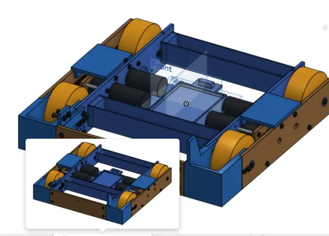
- Drivetrain-only frame, 439.6 mm long
- Cross braces drilled with 4 guides
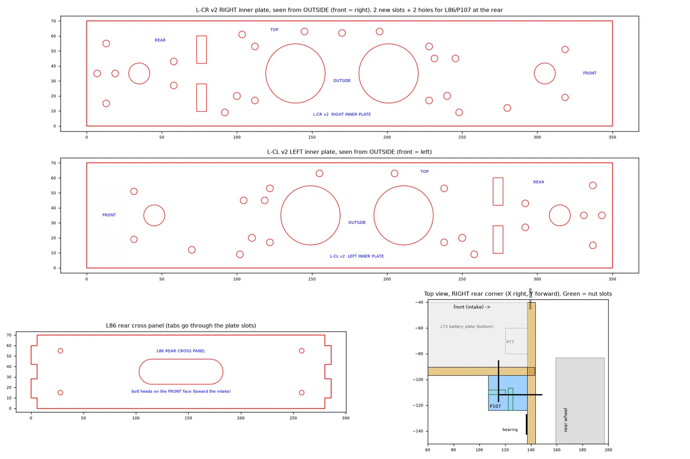
- Plywood panel, tabs through slots
- Every hole laser cut, no drilling
Status: the drivetrain-only chassis is built, testing; we drilled its plates by hand. The rear cross panel and new inner plates are CAD only with laser files ready, not cut yet. We don't have drive test numbers yet.
Lesson learned: measure the real parts. One wrong guess (the sprocket length) changed every spacer in the wheel stack.
Story E · EN-01, 03, 05, 08, 11, 13, 19, 42
Built in-house
Goal: make most of the robot ourselves, from 1/4 in plywood on a laser cutter and PLA on 3D printers.
The problem
Our laser cutter bed is only 305 × 381 mm and our printer beds are 256 mm square. The robot's big side plates don't fit, and every joint needs bolts that line up and can be reached.
What we tried
- Splitting plates (Sep 24). Our first straight split lines cut right through bolt holes, one of them a motor hole. Now the seams step around holes, every hole keeps a ring of solid wood (4.5–10 mm), and every seam gets a splice bracket.
- One bolt size (Sep 25). All wood joints use #8-32 bolts in 4.5 mm holes with washers and nylon lock nuts. REV parts stay M3.
- A loose strip, three tries (Sep 27). A clamp on the outside hit the motor plate. A clamp on the inside needed screws longer than ours. Version 3, a narrow bar along the bottom edge, worked.
- Print to laser (Oct 3). We switched the shooter side panels from slow 6 mm prints to laser-cut plywood. We cut a test strip with 11.9, 12.0 and 12.1 mm holes first, to pick the best bearing fit.
- Every bolt in the CAD (Oct 5). Bolt heads and nuts kept hitting other parts. We added all 287 bolts to the CAD: at first only 92 were clear. After fixing holes, pockets and directions, 248 of 276 were clear. Screw length rule we found: material + 9.2 mm.
- Wires hard to reach (Oct 4). The hub plugs had only about 3 mm of room and need 15–20 mm. We designed a back plate with a sliding hub drawer.
- Labels and guides (Oct 16–25). We engrave FRONT, TOP and part names on laser parts so they go on the right way, and make drill guides so hand-drilled holes land where the CAD says.
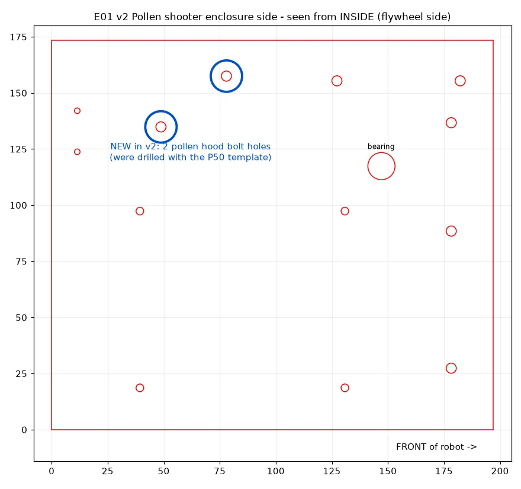
- Shooter side panel in plywood
- Test strip picks the bearing hole size
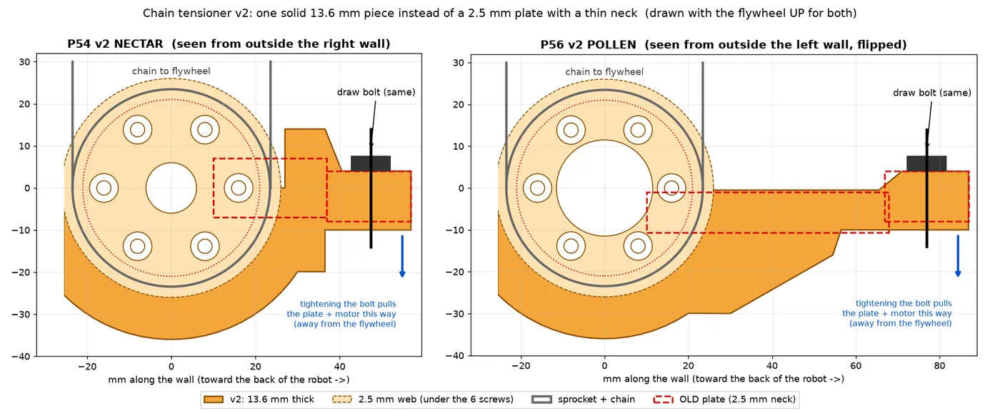
- Old neck 2.5 mm thick
- New part 13.6 mm thick
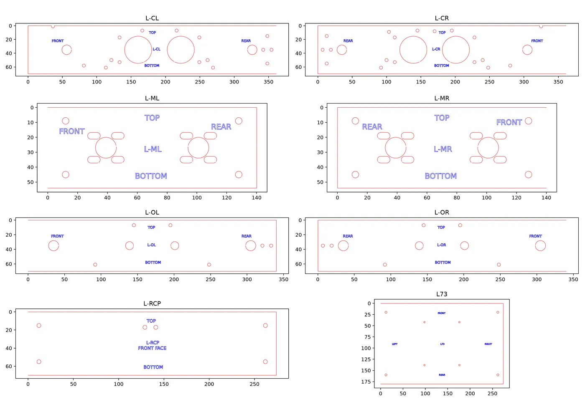
- Each plate says which way it goes
- Cut lines red, engraving blue
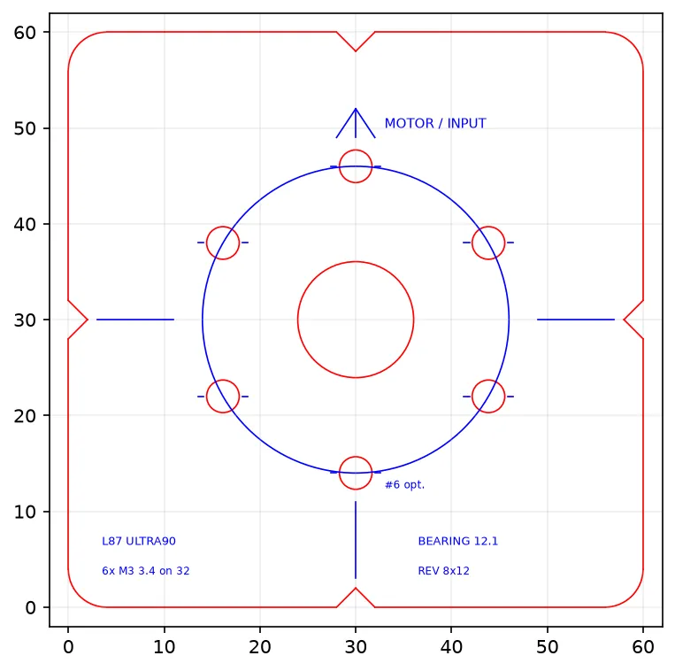
- Gearbox hole pattern for wood parts
- Arrow shows the motor side
Status: the frame, drive pods and early parts were cut, printed and built. Many newer parts (hub drawer, tensioners, bearing adapters) have files ready but are not made yet.
Lesson learned: never move a hole onto a line where a part is split. We had to undo one move that did that.